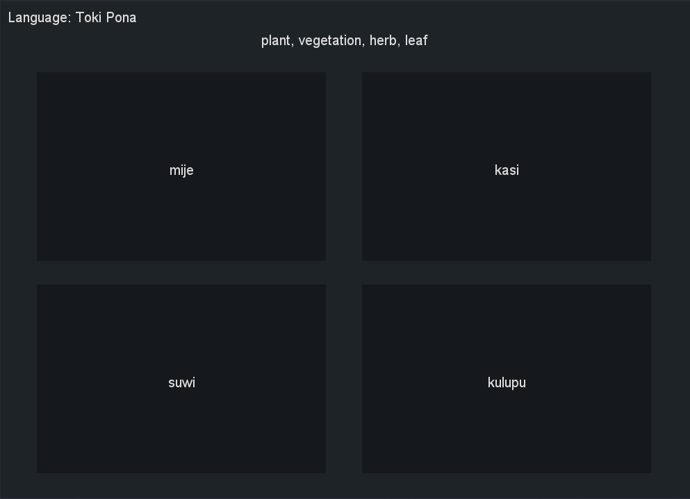
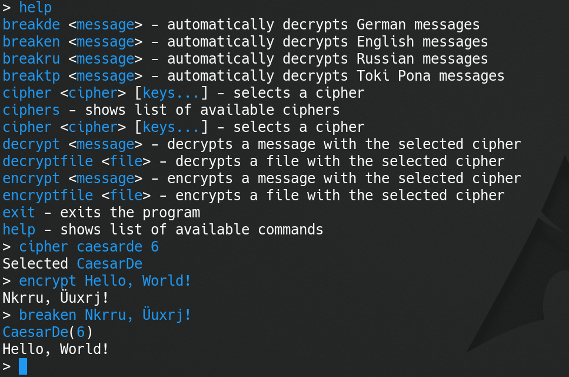

Reina is currently capable of telling the time in most capitals of the world, detecting spam, flood, and CAPS, classifying messages by language, understanding most Toki Pona sentences, and decrypting very basic ciphers in English, German, Russian, and Toki Pona.
No information yet.
A wordcard program with customisable languages and words.
Language: Java
GitHub: https://github.com/Qusarun/QWC

A tool for encrypting and decrypting text with a multitude of different ciphers, as well as a set of custom ciphers made by me. The program currently supports only 45 ciphers, but there will be a lot more in the next recode. It will also be able to break any monoalphabetic substitution and transposition ciphers.
Commands:
breakde decrypt a German message without knowing the cipher or the key
breaken decrypt an English message without knowing the cipher or the key
breakru decrypt a Russian message without knowing the cipher or the key
breaktp decrypt a Toki Pona message without knowing the cipher or the key
cipher select a cipher
ciphers show list of avaiable ciphers
clear clear the terminal
decrypt decrypt a message
decryptfile decrypt a file
encrypt encrypt a message
encryptfile encrypt a file
exit exit the program
help show list of available commands
Language: Java
GitHub: https://github.com/Qusarun/QusCrypt

There will be two versions of this IDE: light (terminal) and full (GUI). It will support CygniLang, C, NASM, and possibly even more programming languages later on. The light version of this IDE will also be the default text editor of CygniOS.
Release date: the middle of this summer
Language: Java
GitHub: not yet